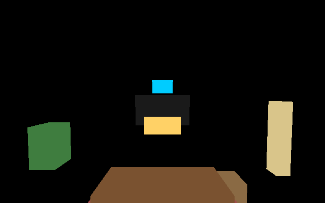
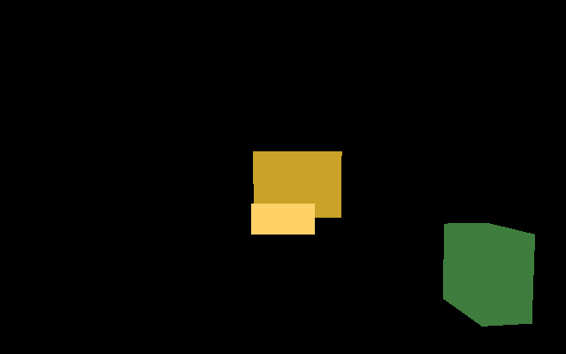

Playwright for spatial apps. Describe how a wearer's head and eyes move, then assert what they should see — no headset, no GPU, no display. Runs on any CI box.
Testing smart-glasses apps (heads-up displays like Ray-Ban Display, AR glasses like Snap Specs, Horizon OS headsets) normally means wearing the device and walking around. That does not fit CI. Lookwright replays head motion and gaze from a data file, renders the scene and your spatial UI on the CPU, and turns “does the UI stay anchored while the wearer walks and looks around?” into a repeatable red/green test. The same simulation emits a structured perception feed you can pipe into a contextual AI agent and unit-test its decisions.
┌────────────────────────────────────────────────────────┐ │ CLI / GitHub Actions Runner │ │ lookwright test · golden · perception │ └───────────────────────────┬────────────────────────────┘ │ ┌───────────────────────────▼────────────────────────────┐ │ Lookwright Core │ │ - Trajectory Engine (6DoF head / eye motion) │ │ - UI Anchor Engine (World Lock / Head Lock) │ │ - Deterministic CPU Renderer (no GPU) │ │ - Spatial Perception Mock (BBox, Depth, Gaze Ray) │ └────────────┬───────────────────────────┬───────────────┘ │ │ ┌────────────▼─────────────┐ ┌───────────▼───────────────┐ │ Spatial UI under test │ │ Contextual AI under test │ │ (anchors / layout) │ │ (vision & gaze prompts) │ └──────────────────────────┘ └───────────────────────────┘
Clone and run the shipped living-room scenario end to end. The wearer walks, looks left at the TV, pinches, and speaks — seven assertions check what the UI did.
$ git clone https://github.com/daikiito-dk/Lookwright && cd Lookwright $ cargo run -p lookwright-cli -- test --config examples/tests/walk_and_look.test.json lookwright: walk-and-look A-01 PASS ui_visible info-card: visible 5.53s of 8.00s (required 2.00s, coverage 0.99) A-02 PASS gaze_focused tv: gaze on tv for 4.43s (required 1.00s) A-03 PASS anchor_drift info-card: max drift 0.0000m within 0.0100m A-03 PASS anchor_drift hud-hint: max drift 0.0000m within 0.0100m A-04 PASS event_fired pinch: event gesture fired at t=5.000s A-04 PASS event_fired voice: event voice fired at t=6.800s A-05 PASS golden_visual: 2 frame(s) within thresholds (worst mean_abs_diff 0.000) summary: 7 pass, 0 fail
Visual regression without a GPU. The deterministic CPU rasterizer renders world + UI panels; frames are compared against generated goldens with thresholds, so cross-platform libm jitter never flakes CI.


| Code | type | Passes when |
|---|---|---|
A-01 | ui_visible | the panel stays visible for `duration_sec` (coverage ≥ `min_coverage`) |
A-02 | gaze_focused | the gaze ray hits `target` for `duration_sec` |
A-03 | anchor_drift | world/head-lock placement drift stays under `max_drift_m` |
A-04 | event_fired | a gesture / voice / gaze event fired during the run |
A-05 | golden_visual | rendered frames match golden PNGs within thresholds |
The same simulation dumps what a vision agent would receive: visible objects, 2D/3D bounding boxes, distances, and the gaze target — as JSON or JSON-LD. Feed it into your agent's prompt pipeline and assert on its output.
$ lookwright perception --world living_room --trajectory walk.json --at-sec 1.0 --format jsonld { "@type": "PerceptionFrame", "schema": "lookwright/perception-frame@1", "t_sec": 1.0, "camera": { "position_m": [0.0, 1.74, -0.6], "forward": [0.0, -0.0436, -0.9990], "gaze_target": "tv" }, "visible_objects": [ { "@type": "SpatialObject", "id": "tv", "label": "TV", "distance_m": 4.32, "bbox_px": [266.30, 186.86, 373.70, 246.78], "world_aabb_m": { "min_m": [-0.8, 0.85, -4.94], "max_m": [0.8, 1.75, -4.86] } } // … 6 visible objects, sorted by distance ] }
Drop into any pipeline. Exit codes: 0 pass, 1 assertion failure, 2 usage/validation error. Ships a GitHub Actions composite action and a CPU-only Docker image.
# your repo's workflow
- uses: daikiito-dk/Lookwright/examples/ci-github-action@main
with:
config: spatial/walk_and_look.test.json
junit: lookwright-junit.xml
Drive it from Node with the zero-dependency TypeScript SDK, or via npx lookwright once the npm package is published (build it from sdk/ts until then).
import { runTest } from "lookwright";
const { exitCode, report } =
runTest("spatial/walk_and_look.test.json", {
reportPath: "report.json",
});